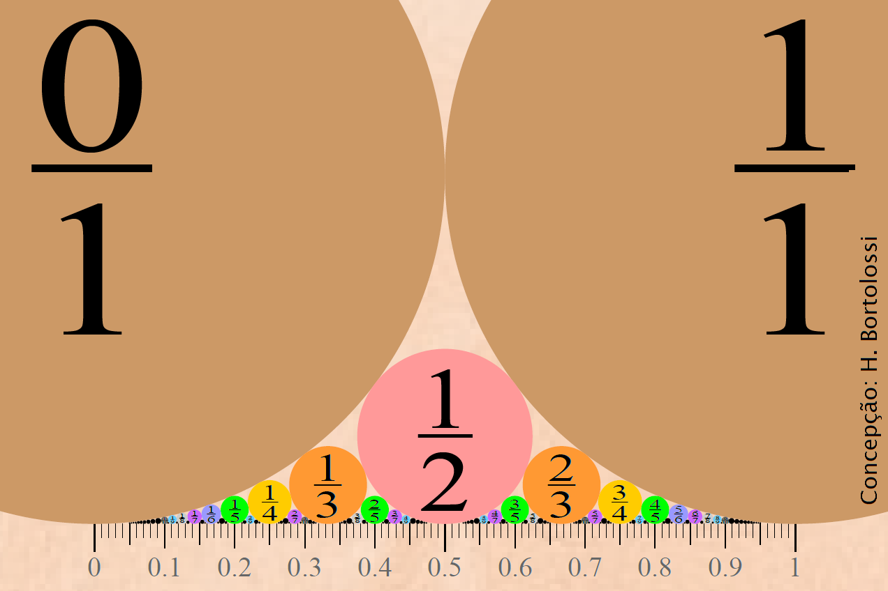

freitas @ vm.uff.br
Turma B1
Terças e quintas, 9-11h
V1 - 07 de maio
V2 - 25 de junho
2a Chamada - 02 de julho
VS - 14 de julho
A vista de prova acontecerá na aula seguinte à aplicação de cada verificação da aprendizagem.
Quinta-feira Santa - 09 de abril
Tiradentes - 21 de abril
São Jorge - 23 de abril
Corpus Christi - 11 de junho
Clayton W. Dodge, Sets, Logic & Numbers, PWS, Boston, 1969.
Edward Scheinerman, Matemática Discreta, Thomson, São Paulo, 2011.
Mariana Ferreira, Recorrências Lineares Não Homogêneas de Segunda Ordem, UFF, Niterói, 2019.
Diagramas Gerais (aqui chamados Diagramas de Venn)
Texto sobre Hotel de Hilbert (Alex Bellos, Alex no País dos Números - Uma Viagem ao Mundo Maravilhoso da Matemática, Companhia das Letras, São Paulo, 2011, pp. 424-436.)
Texto sobre Conjuntos (Clayton W. Dodge, Sets, Logic and Numbers, PWS, Boston, 1969, pp. 45-61.)
Texto sobre Relações (Clayton W. Dodge, Sets, Logic and Numbers, PWS, Boston, 1969, pp. 62-71.)
Texto sobre Funções (Clayton W. Dodge, Sets, Logic and Numbers, PWS, Boston, 1969, pp. 71-75.)
Texto sobre Indução (Clayton W. Dodge, Sets, Logic and Numbers, PWS, Boston, 1969, pp. 122-128.)
Texto sobre a densidade do conjunto dos racionais (Clayton W. Dodge, Sets, Logic and Numbers, PWS, Boston, 1969, pp. 190-193.)
Texto sobre cardinalidades infinitas (Clayton W. Dodge, Sets, Logic and Numbers, PWS, Boston, 1969, pp. 261-271.)
|  | . |
Redação matemática - Lista 1 - Existem infinitos racionais entre 0 e 1. |
Indução - Scheinerman: Seção 21 - Indução (páginas 192-195). Lista 3 da Profa Juliana Coelho (dica para o Item 2i: usar o Item 2j como lema; correção no Item 2a: o numerador é 2).
Conjuntos - Scheinerman: Seção 8 - Conjuntos (páginas 63-64). Lista 4 da Profa Juliana Coelho. Extras: (1) Será que a resposta do item 6b da Lista 2 é an=an-1+an-2? (2) Dado um conjunto A com n elementos, quantos são os subconjuntos de A com exatamente k elementos? Scheinerman: Seção 10 - Conjuntos II: Operações (páginas 82-85). Verdadeiro ou falso? Para todos os conjuntos A, B e C, temos: (1) A-(B-C)=(A-B)-C e (2) A-(B-C)=(A-C)-B. (I) Justifique usando diagramas. (II) Justifique discursivamente.
Relações - Lista 5 da Profa Juliana Coelho. Scheinerman: Seção 13 - Relações (páginas 98-100). Investigue as propriedades algébricas das operações de união, interseção, complementação, reversão e composição de relações (associatividade, comutatividade, idempotência, involutividade, elemento neutro, elemento zero, distributividade, etc.). Faça uma revisão de conjuntos, lendo e fazendo os exercícios do texto Clayton W. Dodge, Sets, Logic and Numbers, PWS, Boston, 1969, pp. 45-61. Lista A - Relações.
Relações de equivalência - Scheinerman: Seção 14 - Relações de Equivalência (páginas 107-109). Scheinerman: Seção 15 - Partições (páginas 115-116).
Ordem - Lista - CPOs da Profa Juliana Coelho. Scheinerman: Seção 54 - Ordens (página 527). Scheinerman: Seção 53 - Máximos/Mínimos (páginas 522-524). Lista C - Ordens.
Funções - Quando possível, dê exemplo de uma relação de A={a,e,i,o,u} em B={1,2,3} que seja: (1) funcional, total, injetiva e sobrejetiva; (2) funcional, total, injetiva e não-sobrejetiva; (3) funcional, total, não-injetiva e sobrejetiva; (4) funcional, total, não-injetiva e não-sobrejetiva; (6) funcional, não-total, injetiva e sobrejetiva; (7) funcional, não-total, não-injetiva e sobrejetiva; (8) funcional, não-total, não-injetiva e não-sobrejetiva; (9) não-funcional, total, injetiva e sobrejetiva; (10) não-funcional, total, injetiva e não-sobrejetiva; (11) não-funcional, total, não-injetiva e sobrejetiva; (12) não-funcional, total, não-injetiva e não-sobrejetiva; (13) não-funcional, não-total, injetiva e sobrejetiva; (14) não-funcional, não-total, injetiva e não-sobrejetiva; (15) não-funcional, não-total, não-injetiva e sobrejetiva; (16) não-funcional, não-total, não-injetiva e não-sobrejetiva. Idem para A={a,b,c} e B={1,2,3,4}. Ibidem para A={a,b,c} e B={1,2,3}. Classifique as seguintes relações em funcional (ou não), total (ou não), injetiva (ou não) e sobrejetiva (ou não): (a) R={(x,2x) : x é número natural}, (b) R={(|x|,x) : x é número inteiro}, (c) R={(r,dom(r)) : r é uma relação}, (d) R={(ca,co) : ca é uma camiseta do seu armário e co é a cor da camiseta ca}. Leia o Texto sobre Hotel de Hilbert (Alex Bellos, Alex no País dos Números - Uma Viagem ao Mundo Maravilhoso da Matemática, Companhia das Letras, São Paulo, 2011, pp. 424-436.). Lista - Funções. Scheinerman: Seção 28 - Funções (Autoteste: páginas 280-282, itens 1 a 7, 9 a 11, 13).
Infinito - Lista - Cardinalidade. Hotel de Hilbert.
A tolerância máxima de atraso em dias de verificação de aprendizagem é de 30 minutos. Por causa disso, não é permitido entregar a prova e sair antes de decorridos 30 minutos de prova.
Não é permitido durante a prova sair e retornar à sala (salvo em situação de urgência).
Não é permitido usar calculadora ou celular durante a prova.
A 2a Chamada está aberta a todas e todos e obrigatoriamente substitui a menor nota dentre V1 e V2, mesmo que a nota da 2a Chamada seja menor que as outras duas. Após decorridos 30 minutos de prova, a aluna ou aluno poderá optar por não entregar a 2a Chamada (esta aluna ou aluno não assinará a lista de presença).